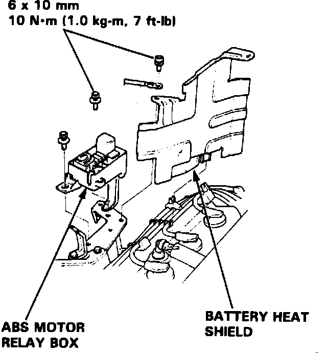
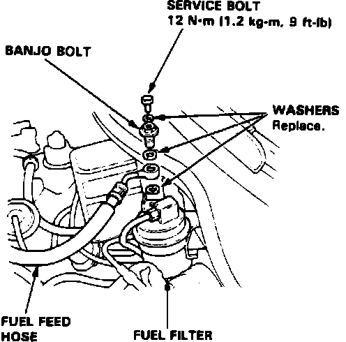
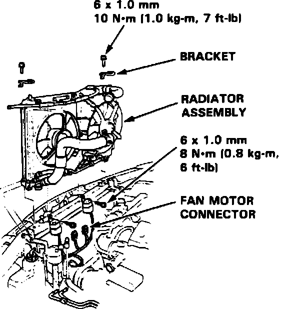
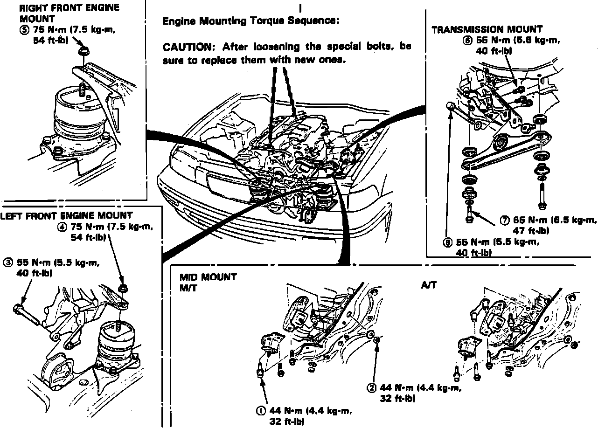

Engine: Service and Repair
Fig. 10 ABS Motor Removal:

Fuel Pressure Relief:

1. On models equipped with radio coded theft protection system, refer to Vehicle Damage Warnings for system disarming and arming procedures. On models equipped with airbag system, refer to Technician Safety Information for system disarming and arming procedures.
2. Disconnect battery cables and remove battery and tray.
3. Remove radiator cap.
4. Raise and support vehicle.
5. Remove engine lower splash shield attaching bolts, then remove.
6. Drain coolant, transaxle fluid, differential fluid and engine oil.
7. Open hood as far as possible.
8. Remove ignition coil wire, noise condenser wire and engine ground wire.
9. Remove ABS motor relay box, battery heat shield and battery, Fig. 10.
10. Remove air intake hose and air cleaner assembly.
11. Relieve fuel pressure as follows:
a. Remove fuel filler cap.
b. Using suitable wrench, hold banjo bolt and service bolt, Fig. 11.
c. Place suitable shop rag over service bolt and wrench. Place a shop towel over the fuel filter to prevent pressurized fuel from spraying over the engine.
d. Slowly loosen service bolt one complete turn to relieve pressure.
12. Remove pressure control valve fuel feed hose and fuel return hose.
13. Loosen throttle cable locknut, then slip cable from accelerator linkage.
14. Remove throttle cable clamp and resistor electrical connector.
15. Remove engine electrical harness connectors and clamps.
16. Disconnect fuel return hose, canister hoses, emission vacuum hose and brake booster vacuum hose.
17. Disconnect heater hoses.
18. On models equipped with automatic transaxle, disconnect transaxle electrical harness connectors.
19. On models equipped with manual transaxle, disconnect back-up light switch electrical connector.
20. Disconnect ignition wires and remove distributor.
21. Remove underhood relay box wire attaching bolts, then remove transaxle ground cable.
22. Remove power steering belt and pump. Do not disconnect power steering hoses.
23. Remove A/C belt and compressor. Do not disconnect hoses and electrical connector.
24. Remove speed sensor. Do not disconnect fluid hoses.
Fig. 12 Radiator Removal:

25. Remove radiator assembly, Fig. 12.
26. On models equipped with automatic transmission, remove torque convertor assembly.
27. Remove transaxle housing attaching bolts and 26 mm shim.
28. Remove transaxle harness electrical connectors.
29. Remove damper forks.
30. Disconnect lower ball joints.
31. Remove driveshafts.
32. Remove oxygen sensor, then exhaust pipe.
33. Remove transaxle mount and bracket.
34. On models equipped with automatic transaxle, place shift lever in P position.
35. On models equipped with manual transaxle, place shift lever in 1st gear position.
36. Remove secondary cover and 33 mm sealing bolt.
37. Using extension shaft puller tool No. 07LAC-PW50100 or equivalent, remove extension shaft from differential.
38. Install suitable engine lifting equipment.
Fig. 13 Engine & Transaxle Mount Tightening Sequence:

39. Remove left front engine mount nut, then engine mount stopper bolt, Fig. 13.
40. Remove right front engine mount nut.
41. Remove mid mounts.
42. Install suitable transaxle support equipment with rubber pad or wooden block.
43. On models equipped with automatic transaxle, remove transaxle housing mounting bolts and torque converter cover.
44. On models equipped with manual transaxle, remove transaxle housing mounting bolts and clutch cover.
45. Separate engine from transaxle.
46. Install mid mounts and tighten attaching bolts.
47. Ensure all vacuum hoses, fuel or coolant hoses or electrical connectors are disconnected, then remove engine assembly.
48. Reverse procedure to install. Tighten engine and transaxle mounts in order shown in Fig. 13.
49. On models equipped with radio coded theft protection system, refer to Vehicle Damage Warnings for system disarming and arming procedures. On models equipped with airbag system, refer to Technician Safety Information for system disarming and arming procedures.